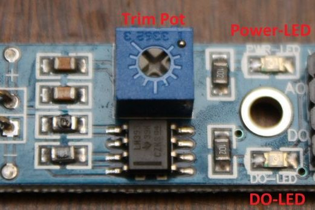

Quick and simple start guide for using and exploring the Flame Sensor module with an Arduino.
Parts Needed
- (1) Flame Sensor (model with an analog out)
- Male to Female jumper wires
- (1)An Arduino
- (1) Lighter or another flame source for testing.
Getting to Know Your Flame Sensor:
Usage:
These types of sensors are used for short range fire detection and can be used to monitor projects or as a safety precaution to cut devices off / on.
Range:
I have found this unit is mostly accurate up to about 3 feet.
How it works:
The flame sensor is very sensitive to IR wavelength at 760 nm ~ 1100 nm light. Analog output (A0): Real-time output voltage signal on the thermal resistance. Digital output (D0): When the temperature reaches a certain threshold, the output high and low signal threshold adjustable via potentiometer.
Pins:
- VCC...... Positive voltage input: 5v for analog 3.3v for Digital.
- A0.......... Analog output
- D0......... Digital output
- GND..... Ground
- VCC............................... 5v
- GND...............................GND
- A0.................................. Analog in 0
This code is constantly updating in order to provide a real time feedback of the flame sensor.